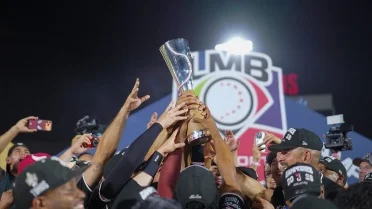
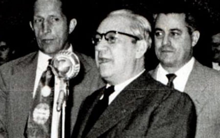
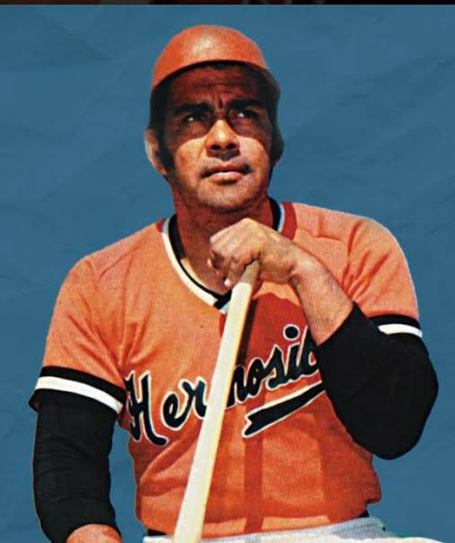
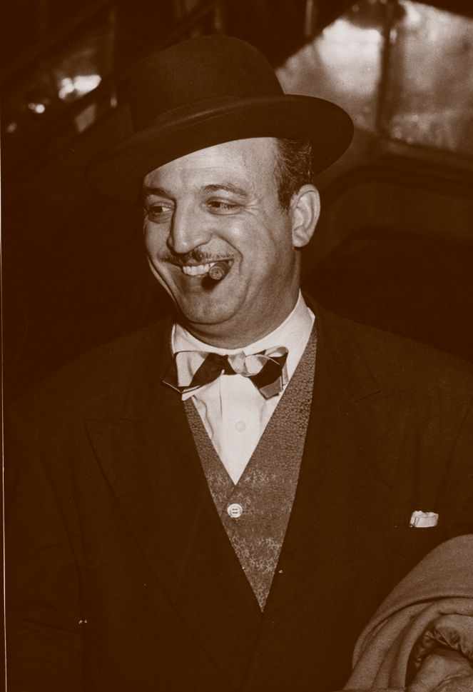
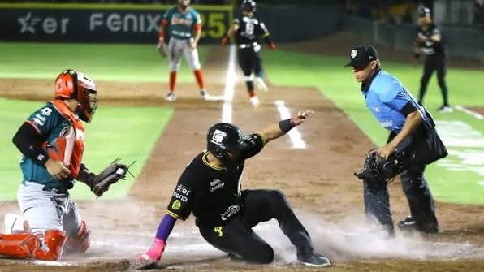

HISTORIA
Liga Mexicana de Béisbol
La Liga Mexicana de Béisbol (LMB) es uno de los campeonatos de béisbol profesional más conocidos y de alto nivel en la escena mexicana del deporte. Consta de 20 equipos y está ligada a la Confederación Mundial de Béisbol y Sóftbol (WBSC por sus siglas en inglés), y fue fundada el 28 de junio de 1925, con 101 años de existencia a la fecha de realización de nuestro sitio web.

Historia de la LMB
Los primeros años
El béisbol se empezó a jugar principalmente desde 1925 a 1937, en su mayoría en CDMX. Esto comenzó a cambiar ante la fundación de la LMB.
Los primeros cimientos del béisbol dentro del país comenzaron en 1925, mediante la unificación de las asociaciones mexicana y del D.F., creando un solo organismo para el béisbol en México.
Los fundadores
Los fundadores de la liga fueron Alejandro Aguila Reyes y Ernesto Carmona, donde, tras varios obstáculos y surgimientos de otras ligas, sumado a un intento fallido de crear una llamada Liga Nacional Mexicana de Béisbol, crean la LMB. Alejandro quedó como el presidente y el propietario del Parque Franco Inglés, siendo el titular de la asociación de los ampáyeres, periodista y en ocasiones, auxiliar.
De ahí en fuera todo siguió sin complicaciones ni cosas destacables, más que en 1937 inicia la compilación de estadísticas.


Ingreso al béisbol organizado de EUA
La liga ingresó al béisbol organizado de EUA en 1955, bajo la denominación de clase AA, gracias a Anuar Canavati, magnate chihuahuense que fungiría como presidente de los Sultanes de Monterrey en ese entonces. Esto sería muy beneficioso, pues se crearían convenios con diversos equipos de la MLB de EUA, como Sultanes-Dodgers y Tigres-Piratas.

Los años sesenta y la Clase AAA
En los años sesenta el número de equipos se hace más grande, pues se incluyen varios de la Liga Central de Béisbol, la cual fue un circuito de ligas menores de béisbol dentro del país, sumado a la creación de nuevos equipos. Esto provoca que se otorgue el nivel “Clase AAA” a la LMB; no obstante, en 2021 y posterior a una reorganización dentro de las Ligas Menores de Béisbol, a la LMB no se le reconoció como una liga nivel “Clase AAA”, aun así siguen operando de la misma forma y con el mismo nivel de alto rendimiento.
Actualidad
El béisbol en México ha sufrido muchos cambios, desde las reestructuraciones de las ligas hasta la creación y desaparición de equipos queridos e icónicos, pero si se ha mantenido vigente es por una razón: se trata de la mejor liga del deporte a nivel nacional y una muy reconocida a nivel internacional, con jugadores de todo el mundo jugando en el país y equipos carismáticos y únicos que ponen en alto la disciplina del béisbol en México.
